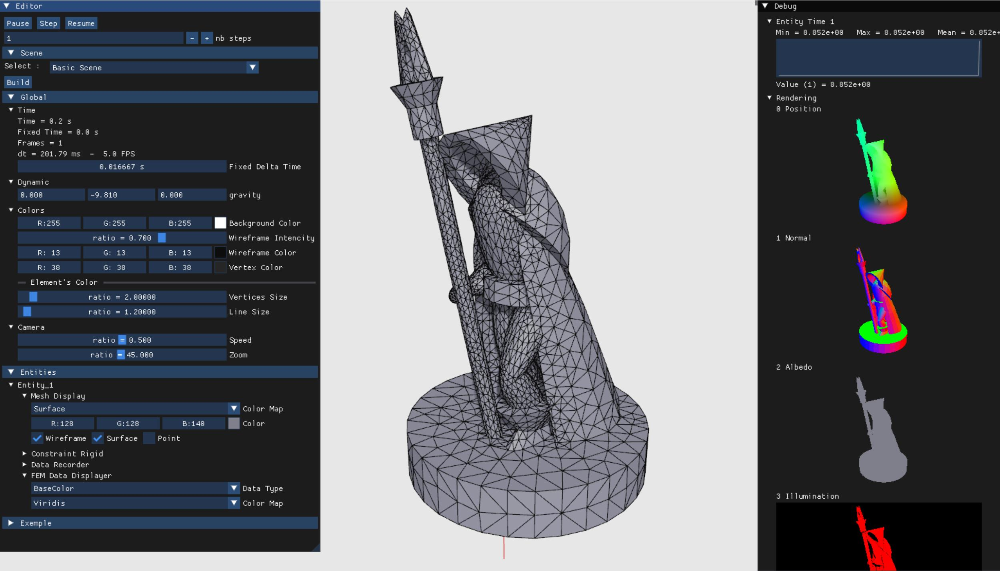
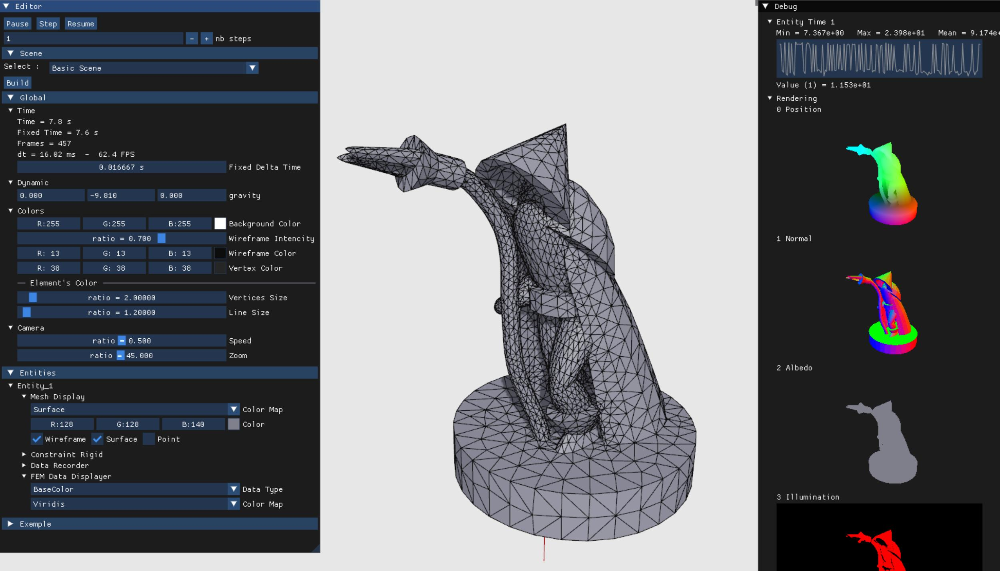
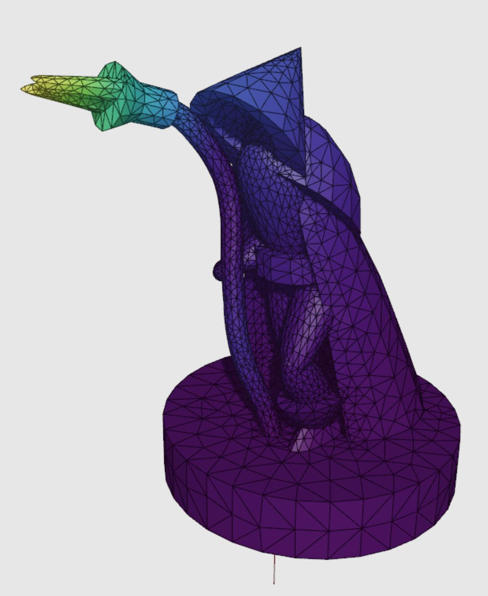
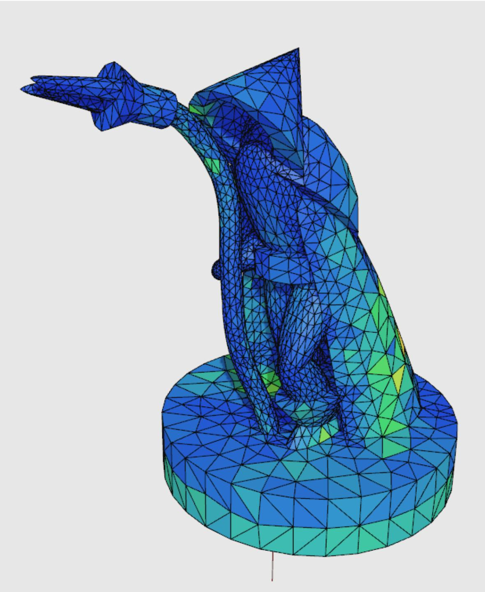
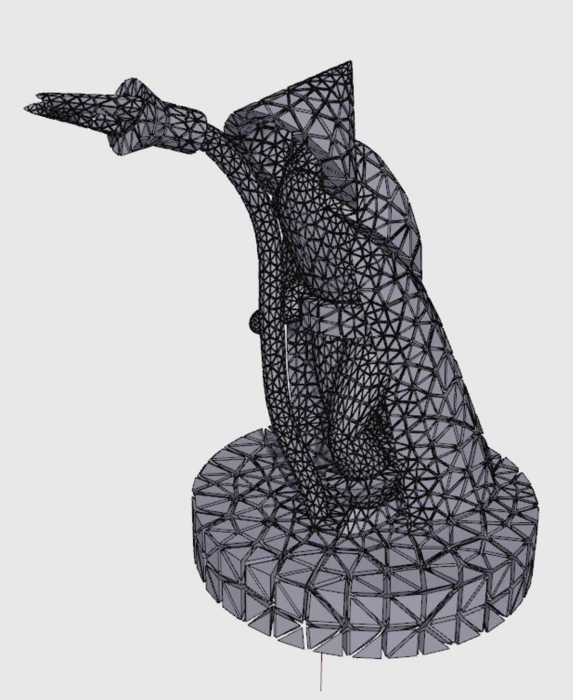
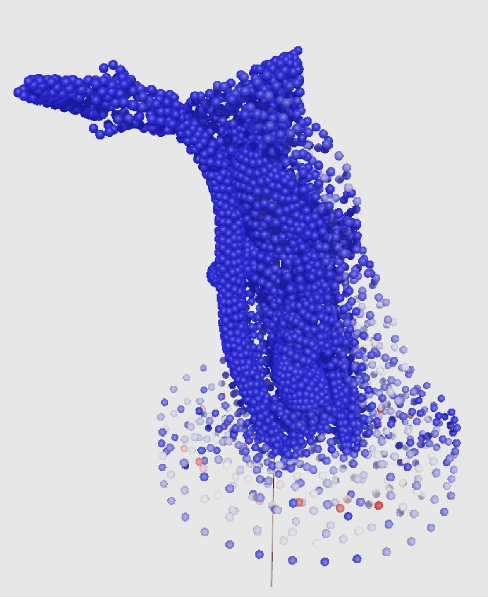

[PAGE EN COURS DE CONSTRUCTION]
J'ai développé ce logiciel durant ma thèse pour simuler des objets déformables en temps réel. Il intègre plusieurs types éléments finis ainsi que différents solveurs sur CPU et GPU (explicite, XPBD et VBD). Pour faciliter mes analyses, j'y ai inclus des outils de visualisation (performances, grandeurs physiques, déformations), avec un rendu graphique capable de gérer des éléments d'ordre élevé et leurs surfaces courbées.
Je prépare une v2, plus robuste et optimisée, qui servira de base à mes futurs projets : simulation de fluides, gestion des collisions, nouveaux moteurs de rendu ou encore traitement de maillages.





